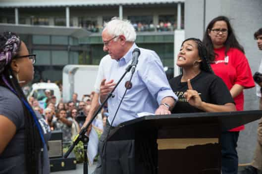

< < < Back
If Black Lives Matter, Blacks Need To Stop Killing Each Other – Return Of Kings
The biggest violent threat to African-American communities is neither the “white” police (for example, the Baltimore officer allegedly most responsible for Freddie Gray’s death was black) nor white people in general. It is blacks themselves. Of all the blacks killed in the United States over the last 35 years, only a fraction have been killed by law enforcement and a small minority by the broader white population.
The numbers may be “large” for these two categories of white-on-black crime (America has 320 million inhabitants) but they are spectacularly dwarfed by the rate at which blacks will shoot, stab, and otherwise maim each other.
93% of murdered blacks between 1980 and 2008 were murdered by fellow blacks. More recently, the proportion was 91%. Even Politifact, which interprets “facts” according to a leftist agenda, rated Rudy Giuliani’s referencing of the 1980-2008 statistics (when he criticized last year’s Ferguson riots) as “Mostly True,” adding the very nitpicking technicality that blacks mostly live amongst fellow blacks. This also suggests that whites would be killed in greater numbers by blacks if neighborhoods were more racially assimilated.
Or, in other words, people will kill each other in the context they find themselves in, undermining, again, the mantra that a purported white shooter and shot black (or the reverse) is always a case of racist hate.
Victimhood depends on the gender or race of the parties involved

The tragic death of homeless man James Boyd over illegal camping allegations received, surprisingly, some ample coverage by the media. It still accounted for very little compared to Eric Garner’s death. The reason? Race.
The white-on-black crime hysteria has much in common with the vitriol surrounding feminism and alleged crimes against women. Tears may flow from families but outrage is thoroughly muted, especially from the likes of the NAACP, when a black child is murdered in an area like South Central Chicago.
Why? Because the probable offender is almost guaranteed to be black, like the victim. That hypothetical black child (actually far from hypothetical if you watch the news) lying dead on the streets of urban Illinois is afforded not even an iota of the attention given to a Michael Brown, whose shooting death, albeit heart-wrenching for his relatives, was reported by many black witnesses as being a case of Officer Darren Wilson acting in clear self-defense.
I personally regard the death of African-American Eric Garner in New York as a police homicide. The facts are different in kind from those surrounding Michael Brown. Garner may well have been behaving illegally but the response from law enforcement was excessive and, in the end, fatal. That said, it is very selective to highlight Garner’s death at the expense of deaths like that of James Boyd.
I chose Boyd, who was white and homeless, because his plight, dying at the hands of Albuquerque police, did receive some wide media attention. It simply paled in comparison, however, to that provided to Garner, which cannot simply be explained by the video recording of Garner’s gruesome suffocation or the fact that police involved with Boyd’s shooting have been put on trial.
Both were accused of “minor” crimes at the times of their deaths, with Boyd allegedly camping illegally due to his homelessness and Garner supposedly selling untaxed cigarettes.
Based on the media and popular airing of the story we can safely say Boyd is a victim, but only at the bottom of a victim’s monument, whereas Garner is at the apex. Why? And God help your regular black-on-white, white-on-white or black-on-black homicide victim, who might be extremely fortunate to make the six o’clock news.
When will the “Black Lives Matter” movement go after black shooters and not Bernie Sanders?

Politically cuckolded liberal-socialist Bernie Sanders
It is conceivable that within the next ten years or so, SJWs will start to continually and explicitly blame whites for every trigger pulled by an African-American on another African-American. Right now, this allocation of direct responsibility to Caucasians is more implicit, brought up in conversations about slavery, Jim Crow and a twisting of the original civil rights movement (the actual civil rights of the 1960s, not the opportunism of a Sharpton or Jackson today).
Other mechanisms for apportioning blame includes “white privilege,” which tendentiously groups together the likes of affluent Mitt Romney and Donald Trump with greatly impoverished Scots-Irish white Americans in two of America’s poorest states, Mississippi and Alabama.
Meanwhile, aside from the occasional (excellent) Samuel L. Jackson video, which doesn’t even mention African-Americans specifically, few are interested in perceiving black people, most notably young black men, as free agents, whatever influences may be around them.
The convenient segue is to focus on the less than 1% of black deaths caused by police, which includes a great many instances of self-defense and needing to protect the public. When the “hate the police” narrative temporarily runs out of steam, one can always confront Bernie Sanders, the “Black Lives Matter” movement’s lackey, and accuse him of some sort of thoughtcrime for “not doing things right.”
Will those really interested in black lives please stand up?

“Gangsta” rap’s glorification of violence has probably killed many times more people than all police shootings, justified and unjustified, combined.
You do not cure cancer that has metastasized throughout most of the body by treating, say, only one’s left hand. So if the rate of black deaths is an issue without any equivalent, which is already doubtful when other racial deaths are being calculatedly quarantined from the underlying discussion, a holistic approach to combating violence is what will matter and pay dividends. A politicized method designed to please a Rachel Dolezal or Louis Farrakhan only serves to divide, antagonize, and hide the facts.
Beleaguered liberals like Bernie Sanders and ex-Maryland Governor and Presidential candidate Martin O’Malley, who was booed for saying “All Lives Matter”, suddenly sense that the putrid corn syrup they and their leftwing colleagues have been feeding to the African-American community and SJWs for years is now being vomited up on them. For sanity’s sake, the only choice is to confront the festering wound of black-on-black crime.
No parent, boyfriend or girlfriend, spouse, child or friend deserves to have their loved ones taking from them in a homicide. Yet what a homicide is seems to change daily, according to the wishes of those pursuing their own agendas. Worse still is how a black death is only really considered a death by SJWs if a white or the “system” is behind it.
The majority of black deaths are thus deemed irrelevant by the same folks claiming black lives matter. How typical.
Read More: Why Do You Care If Black Guys Like Fat White Girls?